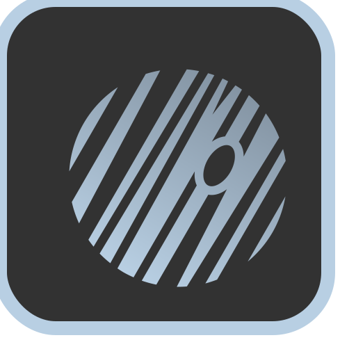
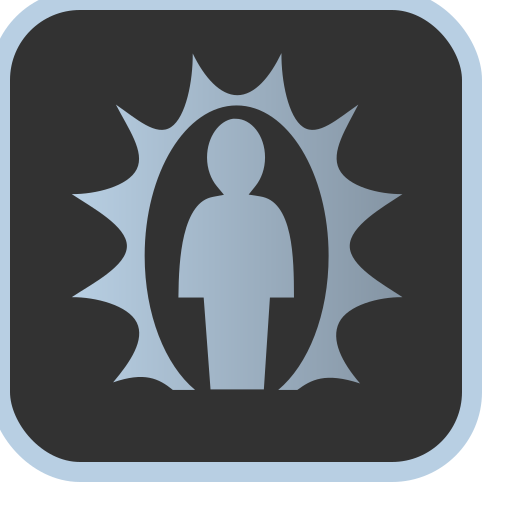

Superstar
Passive Skill. Your raw Charisma score increases by 00
Dance Fighting
Your graceful fighting improves. You can perform a flurry of blows any time you perform a dance for 3 ki points. Furthermore, you can now perform a dance whenever you perform an attack action for 2 ki points.Pirouette
Whenever an attack misses you, you may perform a dance as a reaction.Danse Macabre
Whenever a creature dies within 60 feet, you may perform a dance as a reaction.Two Step (Dance)
Dance. Allied target gains haste until the end of your next turn.Fan Dance (Dance)
This dance costs 0 ki points and restores 2 ki points.Move it to the Rhythm
You can move up to half your speed whenever you perform a dance. This movement does not provoke any attacks of opportunity.Dance Partner
Once per combat, after you roll for initiative, you may choose to designate a dance partner. In doing so, you move your initiative to whatever your dance partner rolled and take your turn for the remainder of combat at the same time as they do. You gain the following benefits:- Synchronized movement: You and your dance partner share the same movespeed, whichever speed is higher.
- Two to Tango: Whenever you perform a dance for another ally, your dance partner gains the benefits of that dance as well. Whenever you perform a dance for your dance partner, you gain the benefits of that dance as well.
- Perfect Coordination: You may perform any teamwork tactic with your dance partner for 1 ki point.
Soloist
Once per combat, after you roll for initiative, you may choose to be a soloist (a Soloist may not designate a Dance Partner). A Soloist gains the following benefits:- Aria: Your allies are always under the effect of countercharm while in your presence.
- Superstar: Your presence is so overwhelming, enemies have trouble attacking you. Whenever any creature tries to attack you for the first time on a turn, the attacker must make a Charisma saving throw against your spell save DC. On a failed save, it can't attack you on this turn, and it must choose a new target for its attack or the attack is wasted. On a successful save, it can attack you on this turn, but it has disadvantage on any saving throw it makes against your abilities on your next turn.
- Spotlight: Place a 5 foot spotlight on the battlefield when you roll initiative. While standing on that spotlight, your abilities cost 1 ki point less.
Dance Fusion
You may perform two different dances at once, spending ki points for both.Dragon Dance (Dance)
Dance. This special performance is unlike other dances you know. It can only be performed once per day and requires all of your remaining ki points (10 ki points minimum). When a dragon dance is performed, all allies within 60 feet gain an extra action immediately.
0
Combat Idol
Passive Skill. Increases your ki points by 00
Still Stance (Stance)
Stance. You gain 2 extra reactions while in still stance, but your movement is halved.Graceful Strike
Whenever you successfully stun a target with stunning strike, you are refunded 1 ki point.Counterstrike
As a reaction, before an attack roll is made, you can perform an attack of opportunity in response to an incoming melee attack. If your attack roll is lower than the incoming attack, you get hit, regardless of your AC. If your attack roll is higher, you avoid the attack and can perform an attack of opportunity in response.Pressure Points
Performing consecutive melee attacks against a single target builds up a stacking combo counter that can be detonated after landing a melee strike, dealing your martial arts dice in damage per stack. Missing an attack, switching targets, or not attacking the target for a turn resets the counter. The maximum number of stacks you can have is equal to your points in Combat Idol. Once expended, you can only start building stacks again at the start of your next turn.Forestallment
Enemies now provoke attacks of opportunity whenever they move into your range, in addition to whenever they leave range. They also provoke attacks of opportunity if they take any action that is not a melee attack while within a threatened zone (e.g. casting a spell, making a ranged attack, using an item, etc)..Ripple (Stance)
Stance. Whenever someone successfully strikes you in melee, you block some/all of the damage of the attack. Subtract your monk level + your points in combat idol from the damage of the incoming melee attack. In response, you can also choose to counterattack as a reaction, dealing your normal damage plus all of the damage you blocked. This counterattack is treated as an attack of opportunity.Full Attack (Stance)
Stance. While in this stance, you can now attack three times instead of two when performing the attack action. Furthermore, you can perform a Flurry of Blows in place of each attack when performing the attack action.Lightning Reflexes
You gain 1 additional reaction per round. Additionally, you now threaten a 15 foot zone and may perform a flurry of blows as an attack of opportunity. Performing an attack of opportunity within this zone moves you to the target.Stance Dance
You may switch stances whenever you perform a dance.Unending Flurry
Whenever you perform a flurry of blows as a bonus action, you can continuously flurry by spending ki points. Each subsequent flurry increases the cost by 1 ki point. If the target is downed by unending flurry, you recover half of the ki points you spent using Unending Flurry.
0
Gravity Rush
Passive Skill. Your speed is increased by 0 feet.0

Jupiter Stance (Stance)
Stance. You are considered two category sizes larger for the purpose of grappling, carrying, throwing, and other strength-based checks. Whenever you perform a melee strike, you can choose to knock the target back 5+(floor(gravity control * 3 / 5) * 5) feet if they are smaller than your effective size category should they fail a strength save against your DC.Lunar Stance (Stance)
Stance. While using Lunar Stance, you become light as a feather, reducing your weight to anywhere from your normal weight to 1/1000th of your normal weight (your choice) and increasing your jump height by 10 times. Whenever you successfully perform a stunning strike while in this stance, you can also choose to similarly reduce the target creature/object's weight while they are stunned.Gravity Slingshot
Your Deflect Missiles improves to the following: You can use your Reaction to deflect an incoming ranged weapon attack OR ranged spell attack. When you do so, the damage you take from the attack is reduced by 2d10 + your Dexterity modifier + your Charisma modifier + your dancer level + points you've spent in Gravity Control. If you reduce the damage to 0, you can spend 1 ki point to use your gravitational manipulation to slingshot it towards a target of your choice. Make a ranged attack roll. If successful, the redirected attack deals as much damage as it would have dealt to you.Gravity Rush (Stance)
Stance. Gravity manipulation no longer costs ki points while in this stance.Shooting Stars (Stance)
Stance. You can perform ranged unarmed attacks with a 60+(gravity control*5)/300+(gravity control*25) ft range. You need rocks, debris, or other fist sized projectiles in order to use Shooting Stars. These projectiles orbit you while Shooting Stars Stance is active.Tidal Lock
Whenever you successfully perform a stunning strike on a target that is in midair, they will stay stuck in midair while stunned, as if under the effects of Immovable Rod. You can also subject yourself to the same effect for 1 ki point as a reaction, lasting until cancelled. This effect can be used to brace yourself against impact or to stabilize yourself, as if you were standing on solid ground.Gravity Palm
Stance. Your melee attacks are now a short-ranged area of effect, covering a 20 x 20 foot square with a range of 30 feet. Furthermore, whenever you perform a melee attack, you can also choose to knock the target down if they fail a strength save against your DC.Reverse Gravity (Dance)
Dance. Costs 10 ki points. You reverse gravity in a 60 foot area centered on yourself for 1 round as the spell Reverse Gravity. You may choose to maintain this state of reverse gravity by spending 3 ki points every round after the first. Unlike the spell, you may choose to orient the direction of gravity in any manner you choose.Meteor Kick
You no longer take damage from falling. Furthermore, whenever you make an attack after falling or sliding, you deal additional damage equal to the distance travelled. Roll for an additional attack's worth of damage per 30 feet travelled. The maximum distance for this ability is 600 feet, at which point you've reached terminal velocity and can no longer increase your damage. If using Jupiter Stance's or Gravity Palm's secondary effects with this attack, the target must roll against your DC with disadvantage.
Neutron Body
You gain immunity to critical hits. Your Stunning Strike improves to the following:- Stunning Strike: Your stunning strike now slows the target as well. When performing a stunning strike, the target must roll to save twice, one against the stun and one against the slow. If they fail both, they are stunned for 1 round and then slowed for 1 round whenever they recover from being stunned. If they fail one but succeed on the other, they are stunned/slowed for 1 round.
Your gravity rush abilities also improve.
0